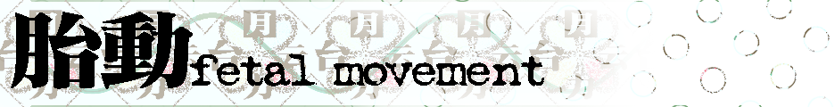

胎动_
G2E.
beinersonase
redi for pus.wor
Chines.e.
We arE.
rang.
xeninsect —— 自然法意义代表
蓝蓑笠群外 —— 你爹
Yusasi —— 卖不出花
GM_Shadows —— bms化。苦难的助手
NancyArchime —— 绘图软体
进度
Track 01 没有
Track 02 不说
Track 03 naidesu

G2E.
redi for pus.wor
Chines.e.
We arE.
xeninsect —— 自然法意义代表
蓝蓑笠群外 —— 你爹
Yusasi —— 卖不出花
GM_Shadows —— bms化。苦难的助手
NancyArchime —— 绘图软体
Track 01 没有
Track 02 不说
Track 03 naidesu